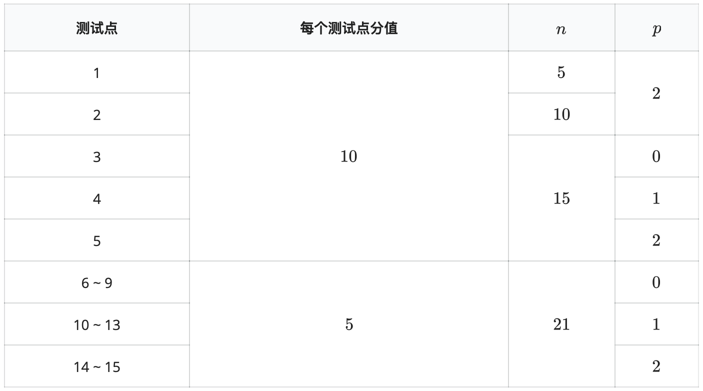

小 S 现在拥有 $n$ 座城市，第 $i$ 座城市的人口为 $w_i$，城市与城市之间可能有双向道路相连。
现在小 S 要将这 $n$ 座城市划分成若干个州，每个州由至少一个城市组成，每个城市在恰好一个州内。
假设小 S 将这些城市划分成了 $k$ 个州，设 $V_i$ 是第 $i$ 个州包含的所有城市组成的集合。定义一条道路是一个州的内部道路，当且仅当这条道路的两个端点城市都在这个州内。如果一个州内部存在一条起点终点相同，不经过任何不属于这个州的城市，且经过这个州的所有内部道路都恰好一次并且经过这个州的所有城市至少一次的路径（路径长度可以为 $0$），则称这个州是不合法的。
定义第 $i$ 个州的满意度为：第 $i$ 个州的人口在前 $i$ 个州的人口中所占比例的 $p$ 次幂，即：
$(\frac{\sum_{x \in V_i}w_x}{\sum_{j=1}^{i}\sum_{x \in V_j}w_x})^p$
定义一个划分的满意度为所有州的满意度的乘积。
求所有合法的划分方案的满意度之和。
答案对 $998244353$ 取模。
两个划分 $\{V_1...V_k\}$ 和 $\{C_1...C_s\}$ 是不同的，当且仅当 $k≠s$，或存在某个 $1≤i≤k$，使得 $V_i≠C_i$。
输入第一行包含三个整数 $n,m,p$，表示城市个数、城市之间的道路个数以及题目描述中的常数 $p$。
接下来 $m$ 行，每行两个正整数 $u,v$，描述一条无向的道路，保证无重边无自环。
输入第 $m+2$ 行有 $n$ 个正整数，第 $i$ 个正整数表示 $w_i$。
输出一行一个整数表示答案在模 $998244353$ 意义下的取值。
即设答案化为最简分式后的形式为 $a/b$，其中 $a$ 和 $b$ 互质。输出整数 $x$ 使得 $bx≡a\mod998244353$ 且 $0≤x<998244353$。可以证明这样的整数 $x$ 是唯一的。
3 2 1 1 2 2 3 1 1 1
1
【提示】
$x^{p−1}≡1\mod p$，其中 $p$ 为质数，$x \in [1,p)$。
【子任务】

保证对于所有数据有：$0≤n≤21$，$0≤m≤n∗(n−1)/2$，$0≤p≤2$，$1≤w_i≤100$。
 Comet OJ
Comet OJ